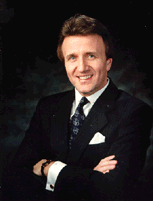

|

|
Dave also spent 4 years of his career as a Banking and Technology consultant working on global technology projects for Bank of America, Security Pacific Bank, Wells Fargo Bank, Home Federal Savings and other large Los Angeles based financial institutions. Dave’s role was to provide consulting services to evaluate and recommend to senior management technology solutions for wholesale banking, capital markets, corporate securities, secondary marketing, portfolio management, cash management, corporate investments, retail banking and state trust. Dave also spent 5 years as a Systems Integration Program Manager, managing multi-million dollar integrated technology sales opportunities within the financial, manufacturing, oil and gas, state and local government, education, healthcare and engineering industries. Dave also spent 2 years as Digital Equipment Corporation’s U.S. Consultant Relations Manager, working with the top 15 consulting firms in the U.S. involved in evaluating and recommending technology solutions to Fortune 500 companies. Some of the major consulting firms were: Ernst & Young, A.T. Kearney, Anderson Consulting, Arthur D. Little, Booz, Allen Hamilton, Computer Services Corporation, Coopers & Lybrand, Deloitte & Touche, KPMG Peat Marwick, Temple, Baker & Sloane, and Price Waterhouse. Dave spent 3 years as Digital Equipment Corporation’s Western Regional Sales and Support Training Manager and 2 years as the World-Wide Training Manager for MET-Rx. Dave took over AST’s Sales Training for the Americas in October of 1996. |